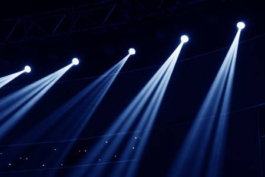

빛은 디자인과 그림에 있어서 매우 중요하다. 그렇기 때문에 빛의 효과를 아는 것은 디자인과 그림을 이해하는 것과 같은일이다. 간단하게 빛에 대해서 설명하고 넘어가겠다.
빛은 자연광과 인공광으로 나눠진다. 자연광이란, 말 그대로 자연속에서 비치는 조명을 의미한다. 아침에는 해가 될 수도 있고, 밤에는 달빛, 또는 별빛이 될 수도 있다, 이러한 자연광 중 우리에게 가장 큰 영향을 끼치는 것은 태양과 달이다. 자연광의 특징은 인공광보다 세기가 매우 강하고, 평행하다는 것이다. 뿐만아니라 자연속에 노출되어 있기 때문에 주변환경의 영향을 매우 많이 받는다. 이러한 대표적인 예시는 노을에서 찾을 수 있는데, 노을이 일어나는 이유는 대기중의 공기, 수증기, 먼지 등이 태양빛을 거의 평행하게 받아드려 빛을 산란시키기 때문에 일어난다.
인공광이란, 자연광 외의 조명을 모두 일컫는 말인데, 주로 사람에 의해서 일어난다.한정적인 곳을 비추는 조명을 일컫는 말이고, 대표적인 예시로는 경기장의 조명, 자동차의 헤드라이트, 형광등, 스탠드의 불빛, 컴퓨터 화면과 같은 일상적인 곳에 쓰이는 모든 빛을 일컫는다. 인공광의 특징은 빛의 세기가 약할뿐만 아니라 조절가능 하다는 점이다. 자연광처럼 하나의 조명으로 이루어져 있는 것이 아닌 여러개의 조명을이용할 수 있다는 것이 매우 중요하다. 따라서 자연광과는 다른 빛의 특징이 일어나는데, 가장 큰 차이점은 빛이 평행하지 않다는 것이다. 빛의 세기가 약하기 때문에 톤이 일정하지 않으며, 빛의 거리에 따라 감쇄가 생긴다. 이러한 특징으로 인해 자연광보다 더 다이나믹한 빛의 변화를 보여줄 수 있다는 특징이 있다.